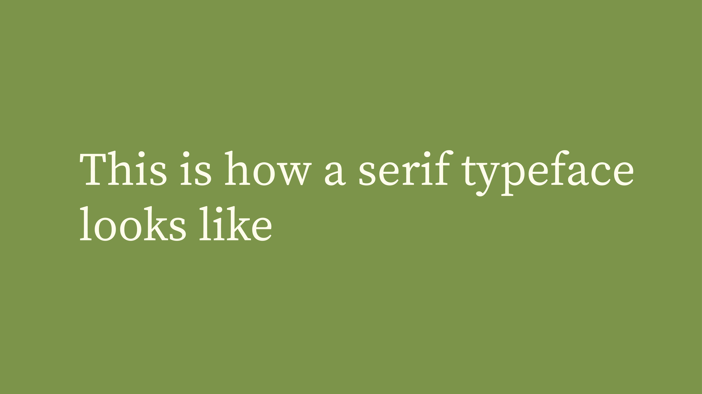
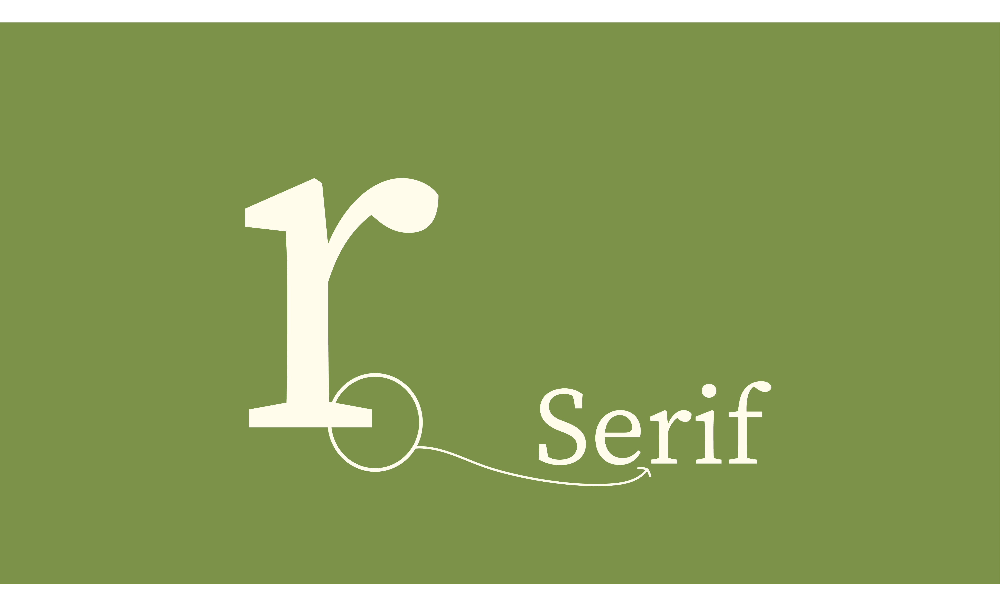

Is it a font or a typeface?
Font vs typeface: what’s the difference? The terms typeface and font are sometimes used interchangeably, which can be confusing.
A typeface is a collection of fonts while a font refers to a specific style or weight within a typeface family. For example, Helvetica is a typeface, but Helvetica Bold is a specific font within that family. See a visual example here.
What is typography?
Typography is the art and technique of arranging type. Whether you’re designing a website, an app, or a poster, you’re using type to deliver a message.
Typography serves two main purposes: legibility and creating a mood or aesthetic to attract a specific audience.
You want to choose typefaces that stand the test of time.
Learning the fundamental rules of type, so you can break them later, will help you become a better designer.
Learn more about typography.Categories of type
To choose fonts effectively, you need to understand the main categories of type: Serif, Sans Serif, and Decorative/Display.
.jpg)
Categories of type: Serif, Sans Serif, and Decorative or Display
Serif typefaces
Serifs are small strokes attached to the end of letters. They are often formal and traditional, used in newspapers, magazines, and books.
Serif typefaces often come in many weights and styles within a family, providing versatility.
Sans serif typefaces

Sans serif typefaces do not have serifs. They are modern, bold, and great for headlines.
Decorative typefaces
Decorative or display typefaces should be used sparingly, mostly for titles and headings. They can range from script to monotype.
Check out decorative fonts.Tips for choosing fonts
Start with inspiration
Research and inspiration are key. Pinterest is a great place to see font ideas for posters and designs.

Choose your main font first
Your main font is the primary type used in headings or titles. It sets the mood for the design.
Watch Ran’s 3 typography tips video.Create contrast with your second font
Pick a secondary font that complements but contrasts your main font. Avoid two fonts that look too similar.

Limit your design to 2–3 typefaces
Stick to 2–3 typefaces to avoid clutter. This rule ensures legibility and a clean, professional design.
Avoid trendy fonts
Use typefaces that stand the test of time. Avoid fonts that are popular for a moment but will quickly feel outdated.
25 classic fonts that lastUnderstand the goal of the design
The typefaces you choose should match the purpose of the project, whether it’s trust-building, playful, modern, or bold.
Learn more about type and design
Check out Flux’s YouTube channel and programs for deeper design education.
YouTube Video